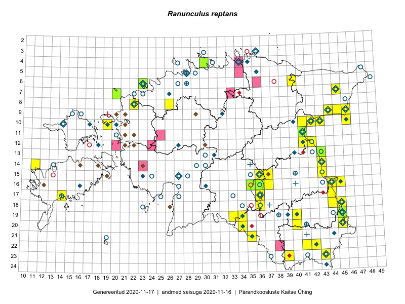

Ranunculus reptans
Uuendatud: 2016-12-08
Kaardile koondatud taksonid: Ranunculus reptans L.

Kaart põhineb 51 kirjel, neist vaatlusi 49 ja eksemplare 2. Taksonit on leitud 25 ruudust.
| Ruut | Vaatleja(d) | Vaatlusaeg | Kirje tüüp | Viide andmebaasikirjele |
|---|---|---|---|---|
| 09-45 | Peedu Saar, Liina Oja | 2015-07-24 | punkt | vaata PlutoFis |
| 18-45 | Peedu Saar | 2015-07-04 | punkt | vaata PlutoFis |
| 18-44 | Peedu Saar | 2015-07-04 | punkt | vaata PlutoFis |
| 18-45 | Peedu Saar | 2015-07-04 | ruut/ala | vaata PlutoFis |
| 18-44 | Peedu Saar | 2015-07-04 | ruut/ala | vaata PlutoFis |
| 16-45 | Toomas Kukk, Eerik Leibak | 2015-07-29 | ruut/ala | vaata PlutoFis |
| 16-44 | Toomas Kukk, Eerik Leibak | 2015-07-29 | ruut/ala | vaata PlutoFis |
| 18-40 | Malle Leht | 2015-07-27 | ruut/ala | vaata PlutoFis |
| 16-44 | Toomas Kukk, Eerik Leibak | 2015-07-29 | punkt | vaata PlutoFis |
| 09-45 | Peedu Saar, Liina Oja | 2015-07-24 | ruut/ala | vaata PlutoFis |
| 20-45 | Katrit Karus, Tõnu Feldmann | 2015-07-27 | ruut/ala | vaata PlutoFis |
| 20-34 | Tõnu Feldmann, Katrit Karus | 2015-07-30 | ruut/ala | vaata PlutoFis |
| 19-45 | Tõnu Feldmann, Katrit Karus | 2015-07-27 | ruut/ala | vaata PlutoFis |
| 04-30 | Peedu Saar, Ott Luuk | 2015-09-03 | ruut/ala | vaata PlutoFis |
| 09-44 | Ott Luuk, Hannes Pehlak | 2015-07-24 | ruut/ala | vaata PlutoFis |
| 19-45 | Toomas Kukk, Timo Luhamäe, Kersti Tambets, Sten Mander, Janika Sammasto | 2014-07-29 | ruut/ala | vaata PlutoFis |
| 19-13 | Oliver Parrest | 2015-07-01 | ruut/ala | vaata PlutoFis |
| 11-41 | Ulvi Selgis | 2016-08-16 | punkt | vaata PlutoFis |
| 10-41 | Kai Rünk, Ülle Jõgar, Illi Tarmu | 2015-07-29T12:00Z | ruut/ala | vaata PlutoFis |
| 10-42 | Kai Rünk, Ülle Jõgar, Illi Tarmu | 2015-07-29T07:00Z | ruut/ala | vaata PlutoFis |
| 10-41 | Kai Rünk, Ülle Jõgar, Illi Tarmu | 2015-07-29 | punkt | vaata PlutoFis |
| 10-42 | Kai Rünk, Ülle Jõgar, Illi Tarmu | 2015-07-29 | punkt | vaata PlutoFis |
| 10-42 | Kai Rünk, Ülle Jõgar, Illi Tarmu | 2015-07-29 | punkt | vaata PlutoFis |
| 14-29 | Liina Oja, Ott Luuk | 2015-05-10 | ruut/ala | vaata PlutoFis |
| 16-36 | Helle Mäemets, Mare Leis | 2015-07-05 | punkt | vaata PlutoFis |
| 06-40 | Mari Metsoja, Jaak-Albert Metsoja | 2015-07-24 | ruut/ala | vaata PlutoFis |
| 15-36 | Helle Mäemets | 2015-07-01 | punkt | vaata PlutoFis |
| 17-36 | Helle Mäemets, Mare Leis | 2015-06-25 | ruut/ala | vaata PlutoFis |
| 15-37 | Helle Mäemets, Mare Leis | 2015-07-05 | punkt | vaata PlutoFis |
| 16-36 | Helle Mäemets, Mare Leis, Jaak-Albert Metsoja | 2015-07-05 | punkt | vaata PlutoFis |
| 16-45 | Ulvi Selgis | 2016-06-04 | ruut/ala | vaata PlutoFis |
| 19-45 | Toomas Kukk, Tiit Hallikma | 2016-06-17 | ruut/ala | vaata PlutoFis |
| 20-40 | Peedu Saar, Tarmo Niitla | 2016-06-17 | ruut/ala | vaata PlutoFis |
| 17-44 | Liina Oja, Maret Gerz | 2016-06-13 | punkt | vaata PlutoFis |
| 15-36 | Helle Mäemets | 2015-07-19 | punkt | vaata PlutoFis |
| 10-41 | Ott Luuk, Eerik Leibak | 2016-08-04 | ruut/ala | vaata PlutoFis |
| 10-42 | Ott Luuk, Eerik Leibak | 2016-08-04 | ruut/ala | vaata PlutoFis |
| 15-36 | Karin Kaljund, Kaire Lanno | 2016-07-29 | punkt | vaata PlutoFis |
| 15-36 | Karin Kaljund, Kaire Lanno | 2016-07-29 | ruut/ala | vaata PlutoFis |
| 19-45 | Tiit Hallikma, Toomas Kukk | 2016-06-17 | punkt | vaata PlutoFis |
| 17-44 | Peedu Saar | 2016-08-24 | ruut/ala | vaata PlutoFis |
| 17-44 | Peedu Saar | 2016-08-24 | punkt | vaata PlutoFis |
| 17-44 | Peedu Saar | 2016-08-24 | punkt | vaata PlutoFis |
| 10-42 | Ott Luuk, Eerik Leibak | 2016-08-04 | punkt | vaata PlutoFis |
| 10-41 | Ott Luuk, Eerik Leibak | 2016-08-04 | punkt | vaata PlutoFis |
| 10-41 | Ott Luuk, Eerik Leibak | 2016-08-04 | punkt | vaata PlutoFis |
| 08-26 | Jaak-Albert Metsoja, Mari Metsoja | 2016-07-04 | ruut/ala | vaata PlutoFis |
| 10-43 | Hannes Pehlak, Ott Luuk | 2016-07-29 | ruut/ala | vaata PlutoFis |
| 08-26 | Jaak-Albert Metsoja, Mari Metsoja | 2016-07-04 | punkt | vaata PlutoFis |
| 11-41 | Peedu Saar | 2015-08-22 | eksemplar | vaata PlutoFis |
| 04-30 | Peedu Saar, Ott Luuk | 2015-09-03 | eksemplar | vaata PlutoFis |